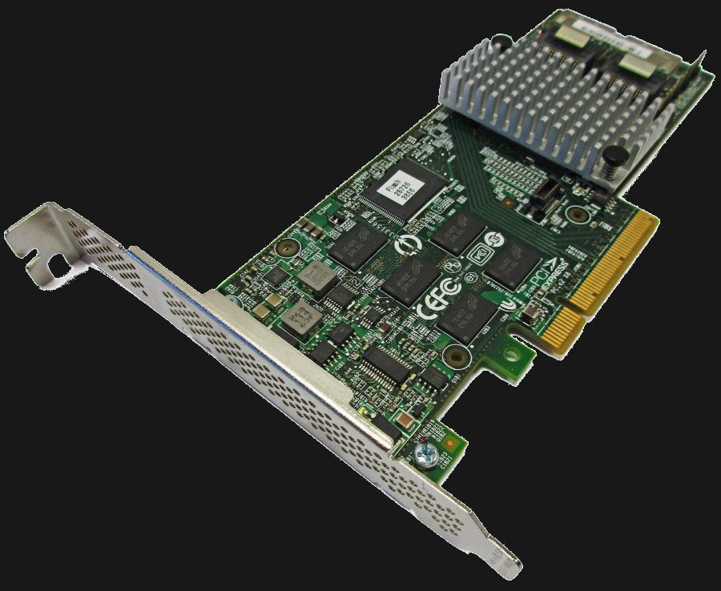
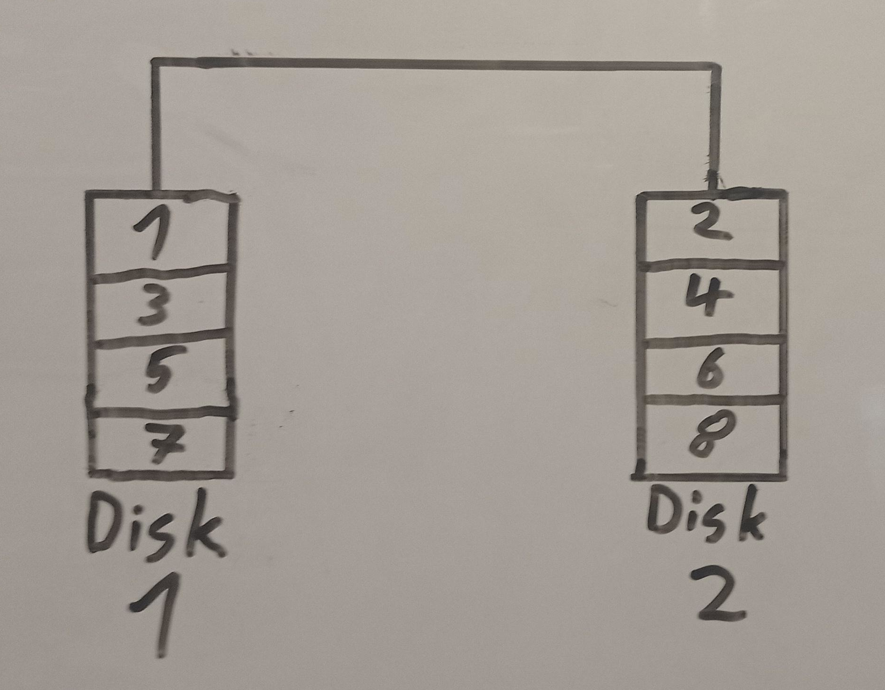
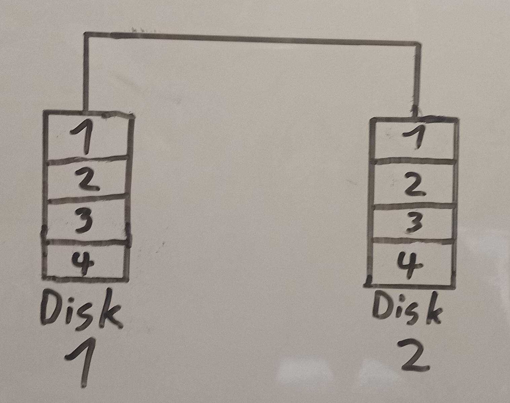
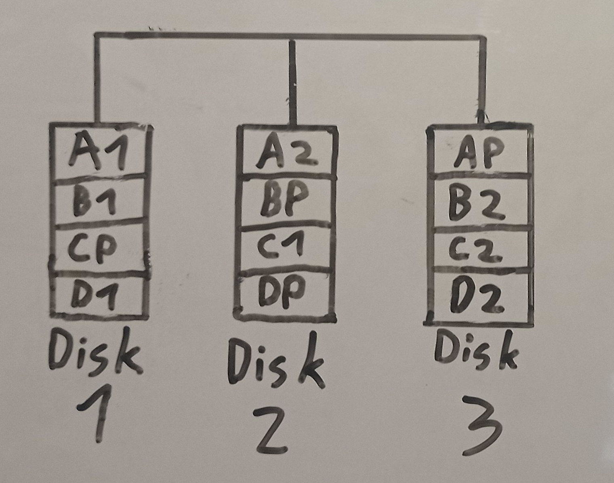
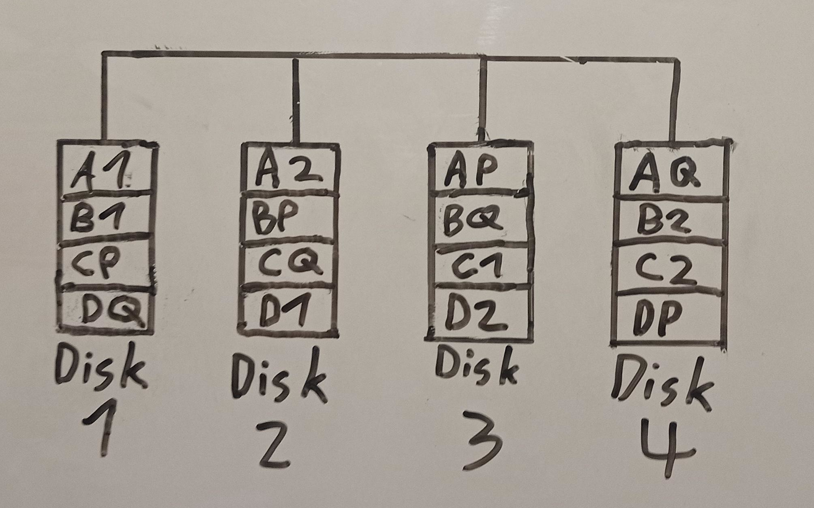
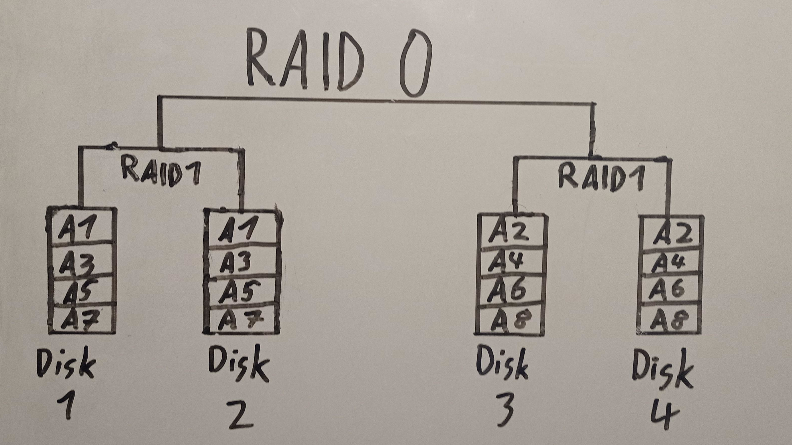

BytesOfProgress
Wiki
RAID - Redundant Array of Independent Disks
RAID, or Redundant Array of Independent Disks (previously called "redundant array of inexpensive disks"), is a storage technology that combines multiple physical disk drives into a single logical unit for the purpose of data redundancy, performance improvement, or both. There are several RAID levels, each with its own configuration and benefits. It was invented by David A. Patterson, Garth A. Gibson and Randy H. Katz, in 1987.
In a RAID array, data is distributed or replicated across the member drives according to the chosen RAID level. The two primary categories of RAID configurations are mirroring and striping.
NOTE: RAID can increase data security, but it is not a backup.
Hardware / Software RAID
Hardware RAID
In hardware RAID, a special controller takes care of the RAID tasks, and it's often part of the storage system. This controller has its own processing power, which can make it faster, but it can also be more expensive. This is what a hardware RAID controller looks like:
Setting up hardware RAID is done through a dedicated interface or tool from the RAID controller, similar to accessing the BIOS. When it comes to moving RAID configurations to a different system, hardware RAID can be trickier because it depends on a specific RAID controller.
Software RAID
Software RAID is generally more flexible and can be moved between systems with compatible software support. Software RAID is managed directly through the operating system.
Unlike hardware RAID, which has its dedicated processor, software RAID uses the computer's CPU and RAM for RAID calculations. While this may cause a slight overhead, modern CPUs are mostly powerful enough to handle these tasks efficiently.
Software RAID configurations can be easily adjusted and managed through the operating system's tools. This flexibility allows users to create, modify, or delete RAID arrays without the need for specialized hardware or additional components.
One of the primary advantages of software RAID is its cost-effectiveness. Since it relies on the existing resources of the host system, there is no need for a separate RAID controller, making it a more budget-friendly solution.
RAID Levels
Each RAID level serves different purposes in terms of performance, redundancy, and capacity. Here are the most common RAID levels:
RAID 0 (Striping)
Pro: High performance, no overhead.
Contra: No redundancy.
A minimum of 2 physical disks needed.
Usable capacity: n-0
Failed drives without data-loss: 0
RAID 1 (Mirroring)
Pro: Instant failover: If the primary drive fails, the secondary can be accessed directly, preventing data loss.
Contra: Twice as much storage capacity required. Write speed is slow as data is written to two hard drives at the same time.
A minimum of 2 physical disks needed.
Usable capacity: n-1
Failed drives without data-loss: 1
RAID 5 (Striping with Distributed Parity)
Pro: High security through distribution of parity data across all hard drives: Hard drives can be replaced during operation (aka. are hotswappable).
Contra: Write speed is slow.
A minimum of 3 physical disks needed.
Usable capacity: n-1
Failed drives without data-loss: 1
RAID 6 (Striping with Dual Parity)
Pro: Double parity protects against data loss. The percentage of usable data storage increases as more hard drives are added.
Contra: Lower performance than RAID 5.
A minimum of 4 physical disks needed.
Usable capacity: n-2
Failed drives without data-loss: 2
RAID 10 (Striping and Mirroring)
Pro: Good performance and fault tolerance. It combines striping and mirroring to provide both speed and redundancy.
Contra: Twice as much storage capacity required.
A minimum of 4 physical disks needed.
Usable capacity: n-2
Failed drives without data loss: Half of the total drives can fail without data loss.
Each RAID level has its own advantages and trade-offs, and the choice depends on the specific requirements of the application, including considerations for performance, data protection, and available storage capacity.
back